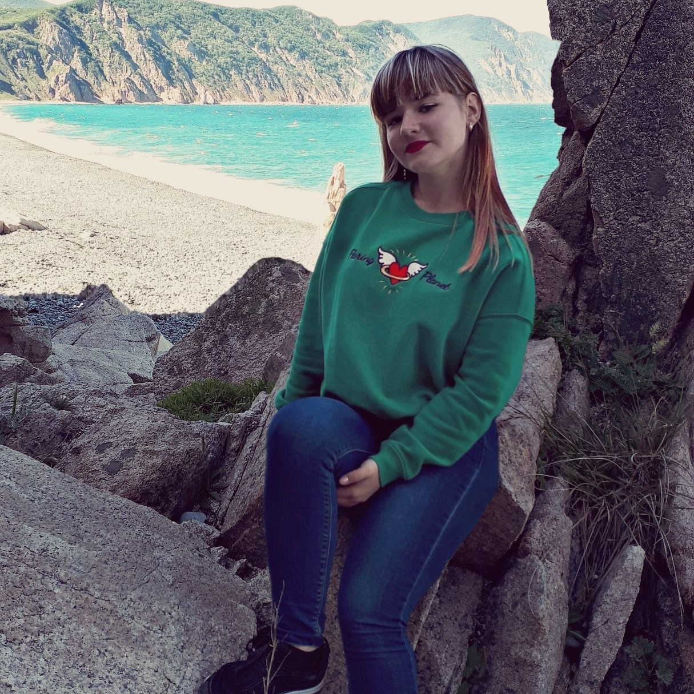

Ларина Екатерина Андреевна

Меня зовут Ларина Екатерина и мне 18 лет. Я родилась в Владивостоке 23 октября 2001 года, где проживаю до настоящего времени. Что касается моего характера, я думаю, что я довольно скромная и спокойная девушка. Мои друзья говорят мне, что у меня есть хорошее чувство юмора, в чем я не уверена. Мне нравится все, что связано с активным отдыхом У меня есть много друзей и знакомых, с которыми я провожу почти все свое свободное время. Но иногда у меня есть перепады настроения, когда мне грустно, и хочется остаться в одиночестве, в каком-нибудь тихом месте. Я думаю, что это вполне нормально, потому что у каждого человека наступают такие моменты. Мне нравится все доброе и положительное и когда у меня появляются небольшие проблемы, я всегда пытаюсь найти в них положительные моменты. Я люблю помогать окружающим людям и смотреть, как они становятся счастливыми от моей помощи. Мне нравится добрые, вежливый, честные, надежные и ответственные люди, а когда люди грубы и агрессивны, я стараюсь обходить их стороной. Я учусь на 1 курсе в ДВФУ направление Прикладная математика и нформатика. Программа обуения здесь интересная,кроме линейной алгебры Но когда я свободна, я люблю читать и гулять с моими друзьями.